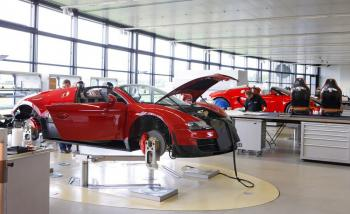

В Volkswagen Group решили, что будет правильным возродить бренд Bugatti там, где зарождалась компания. Здание овальной формы, спроектированное Гюнтером Хенном, стоящее на территории Шато Сен-Жан – родового поместья Этторе Бугатти на окраине Мольсайма, Франция – и есть та самая бывшая мастерская по окрашиванию тканей, где бренд получил второе рождение.
Датой сооружения строения значится 1857 год– хотя другие здания поместья восходят к еще более раннему периоду 1788 года, а ворота относятся к эпохе Средневековья. Здание пришлось полностью отремонтировать под сборку автомобилей премиум-класса. На первом этаже замка разместили офисных работников, а в фойе устроили небольшой автомобильный музей, венец которого Bugatti Royale - автомобиль, созданный в 1926 году в количестве 6 единиц.
Рядом с главным зданием расположена смотровая студия, где покупатели выбирают кресла заказываемого автомобиля, внутреннюю отделку салона, материалы обивки, потолок. Перейдём в здание завода…, ах простите, ателье, и посмотрим процесс сборки автомобилей Bugatti.
Открыв дверь в ателье, не слышим ни грохота оборудования, ни стука отбойных молотков. Ателье Bugatti встречает тишиной монастыря. Интересный факт, в свое время город Мольсайм был известным религиозным местом, а неподалеку от замка расположен иезуитский монастырь.
У здания эллиптической формы размер всего 76 х 45 метров. Внутри три рабочих станции, на каждой из которой автомобили собирает команда из пяти инженеров, которые отвечают за шасси, интерьер, электронные системы автомобиля, внешний дизайн и трансмиссию.
В здании только сборочный цех, сами Bugatti не изготавливает ни одной детали, полагаясь на сеть поставщиков по всей Европе отправляющих компоненты и подсистемы для сборки в Мольсайм. VW создаёт двигатели, коробки переключения передач собираются британскими инженерами Ricardo Inc. Лобовое стекло выливают в Швейцарии, поставщики из Германии и Италии делают монококи из углеродного волокна и панели для кузова. Michelin изготавливает уникальные шины, рассчитанные на скорость до 400 км/ч.
Немецкая компания Draxelmaier поставляет все для интерьера автомобиля, а на AP Racing лежит ответственность за тормозную систему. В общей сложности с компанией сотрудничают 10 крупных поставщиков и сотня мелких компаний.
Так как модели Bugatti собираются на заказ, в ателье нет стеллажей с запчастями, ждущими своего часа. Как только клиент определится с комплектацией автомобиля, под эту комплектацию у поставщиков заказываются нужные комплекты для машины. Ожидание необходимых для сборки автомобиля узлов и запчастей занимает до четырех месяцев, «в зависимости от начинки».
После прихода нужных компонентов, команда собирает Bugatti на шасси в течение пяти-шести недель. Как только основные узлы машины собраны, автомобиль выводят на трек на 30 минут, при этом панели кузова ещё не собраны, а кресла и отделка салона отсутствуют. Если дефекта при 30 минутной обкатке не выявлено, сборку продолжают. Ставят крылья, капот, покрывают прозрачной пленкой и черной фольгой для защиты кузова автомобиля от грязи и повреждений щебнем во время предстоящего 300 километрового испытания. Если инженеры приходят к выводу, что собранный автомобиль соответствует заданным параметрам, его отправляют на мойку (о том, как помыть автомобиль дома, читайте здесь). После помывки автомобиль проходит контроль на выявление дефектов в работе оптики, а затем на него устанавливают новые колеса, сидения и рулевое колесо. На это уходит еще два-три дня к сборке автомобиля.